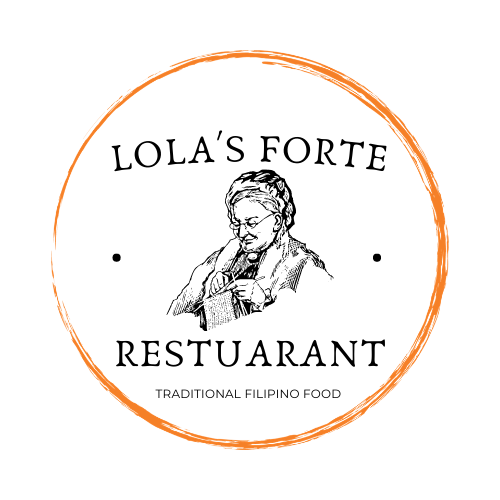

Many of us know that Lola’s Forte is one of the oldest restaurant in the Philippines. With a history
that took root in 1888 (Rizal was allegedly a customer) and a revamp in the 1980s after the original
burned down, Lola’s Forte is a case study on lasting in the wild world called the restaurant
industry.
- Address: Philippines
- Email: lolaforte@gmail.com